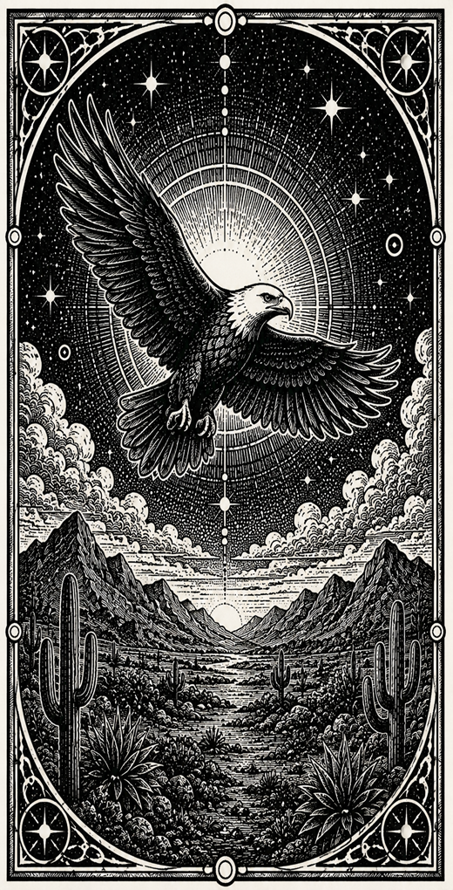
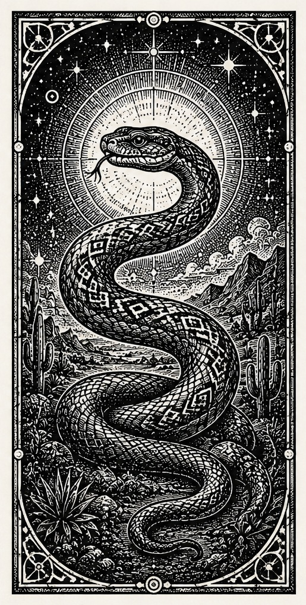
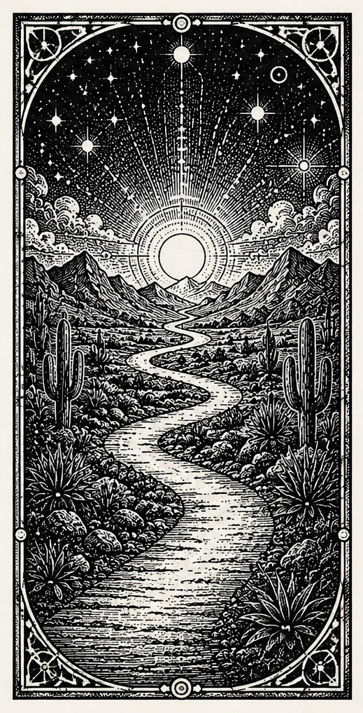

The Eagle
Awareness, vastness, and the view from beyond the self.
About the house
Mission
Knights of the Feathered Serpent Productions is a creative house devoted to the meeting place between story and transformation. Its work draws from the warrior path, desert silence, sacred animal symbolism, and the craft of narrative form.
The name gathers three symbols. The knight stands for discipline and service. The feathered serpent joins earth and sky, instinct and spirit, shadow and ascent. The production house gives these forces structure through books, visual art, and cinematic storytelling.

Awareness, vastness, and the view from beyond the self.

Earth wisdom, transformation, and power moving through the body.

A lived discipline, tested through action, silence, and heart.